파이토치 컨테이너 실습
이 포스트는 여러 절로 구성되어 있습니다.
본 포스트에서는 자주 사용되는 도커 명령과 옵션을 살펴보고, 파이토치 딥러닝 프레임워크를 도커 컨테이너로 구동하는 실습을 진행한다.
Ubuntu 20.04, 엔비디아 RTX 3080 gpu 환경을 기준으로 설명한다. WSL2 환경에서도 같은 방법으로 실습이 가능하다.
1. 기본 명령어
먼저 자주 사용되는 pull, images, run, ps 명령에 대해서 살펴보자. 모든 도커 명령어는 docker로 시작된다. 예를 들어 pull 명령은 docker pull xx 과 같은 형식으로 입력한다.
여기서는 도커 허브(Docker Hub)에 저장되어 있는 파이썬 3.9.2 이미지를 가져와서 기본 명령어 실습을 진행할 것이다.
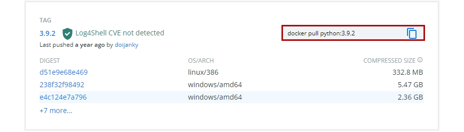
도커 이미지는 이미지 이름과 태그(Tag)로 표시된다. 일반적으로 태그에는 해당 이미지나 이미지가 포함하는 대표 라이브러리의 버전정보를 표시한다. 위의 경우 파이썬 3.9.2버전의 이미지를 python:3.9.2로 표현하였다. 도커 허브에서 필요로 하는 이미지를 가져오려면 이미지 이름과 함께 태그 정보도 정확하게 알고 있어야 한다.
1.1 이미지 가져오기 : docker pull
도커 허브에서 로컬로 이미지를 가져오는(pull) 명령 형식은 다음과 같다.
docker pull [이미지 이름]:[태그]
예를 들어 python:3.9.2 이미지를 로컬 PC로 다운로드하기 위해서 다음과 같이 입력한다.
$ docker pull python:3.9.2
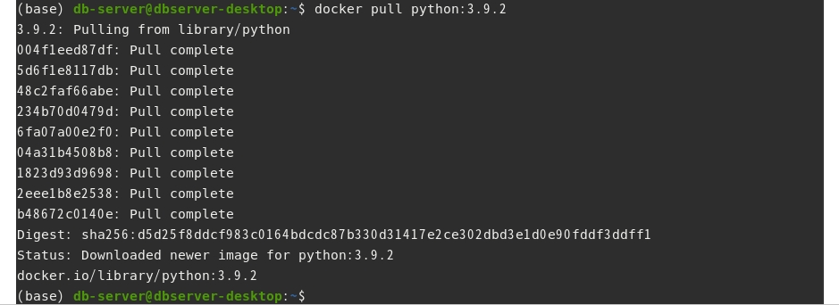
1.2 이미지 리스트 확인하기 : docker images
로컬 PC에 저장되어 있는 이미지를 조회하는 명령이다.
docker images
앞에서 이미지를 가져온 후, 명령을 입력하면 python 3.9.2 버전의 이미지를 확인할 수 있다.
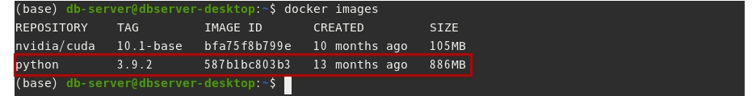
1.3 컨테이너 생성, 실행하기 : docker create, start, run
컨테이너를 생성하는 명령은 다음과 같다.
docker create [옵션] [이미지 이름]:[태그]
생성된 컨테이너를 실행하는 명령은 다음과 같다.
docker start [옵션] [이미지 이름]:[태그]
컨테이너 생성과 실행을 한번에 진행할 때는 run 명령을 사용한다.
docker run [옵션] [이미지 이름]:[태그]
예를 들어 앞에서 받은 python:3.9.2 이미지로 컨테이너를 실행하려면 다음과 같이 입력한다.
$ docker run python:3.9.2
그런데 현재 사용 중인 터미널을 통해 컨테이너에 접근하여 명령을 입력하려면 -i(interactive), -t(tty모드) 옵션을 사용해야 한다. 두 옵션을 하나로 해서 -it로 명시해도 된다.
$ docker run -it python:3.9.2
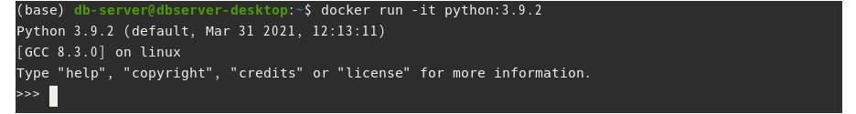
이 옵션을 지정하면 사용중이던 터미널을 통해 컨테이너 내부에서 실행되는 파이썬 쉘에 접근하여 사용할 수 있다.
exit()를 입력하면 파이썬이 종료되고, 컨테이너도 정지된다.
컨테이너 내부에서 외부의 파일이나 디렉토리에 접근이 필요한 경우가 있다. 이를 위해서는 컨테이너 내부의 작업 디렉토리와 외부의 디렉토리를 연동시켜줘야 하는데, 이를 볼륨(Volumne) 지정이라고 한다. 볼륨 지정을 위한 옵션 지정 방법은 -v [외부공간 경로]:[컨테이너 경로] 형식이다. 예를 들어 외부에 ~/outer_dir라는 디렉토리와 컨테이너 내부의 /inner_dir 디렉토리를 연결하고 싶다면 다음과 같이 입력한다.
docker run -v ~/outer_dir:/inner_dir [이미지 이름]:[태그]
자세한 내용은 뒤의 실습에서 다루도록 한다.
1.4 컨테이너 리스트 확인하기 : docker ps
현재 실행되고 있는 컨테이너 목록을 조회하는 명령은 다음과 같다.
docker ps
앞에서 실행했던 python:3.9.2 이미지로 만든 컨테이너는 보이지 않는다. docker ps 명령은 실행 중인 컨테이너 리스트만 출력하기 때문이다. 정지된 컨테이너도 출력하려면 -a 옵션을 사용하면 된다.
$ docker ps -a
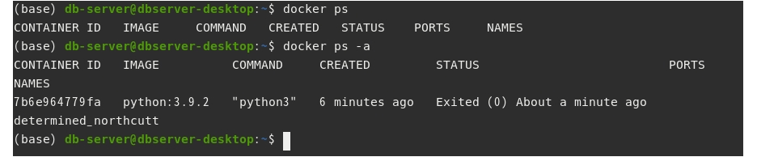
2. 도커로 딥러닝 프레임워크 사용하기
간단한 시나리오 기반으로 컨테이너에서 딥러닝 프레임워크를 구동하는 실습을 진행해본다.
2.1 파이토치 컨테이너 실행하기
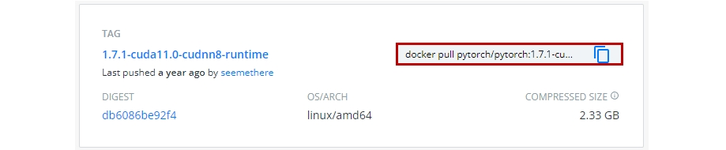
도커 허브의 파이토치 공식 저장소에 있는 1.7.1-cuda11.0-cudnn8-runtime 이미지를 가져온다.
$ docker pull pytorch/pytorch:1.7.1-cuda11.0-cudnn8-runtime
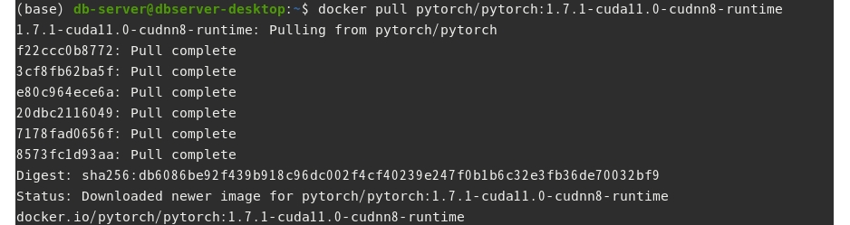
저장된 이미지 리스트를 확인한다.
$ docker images
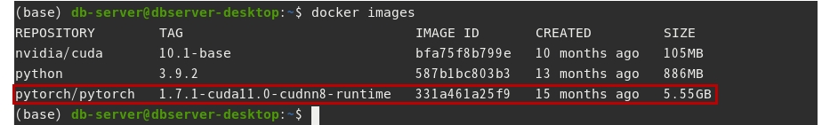
docker run 명령으로 컨테이너를 생성한다. -it 옵션을 사용해서 터미널로 컨테이너에 접근해본다.
$ docker run -it pytorch/pytorch:1.7.1-cuda11.0-cudnn8-runtime
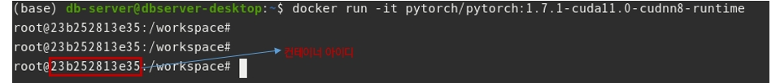
컨테이너의 bash 쉘에 접근하였다. 위 그림에서 23b25xx는 컨테이너의 아이디이다. /workspace 는 컨테이너에서 사용하는 root 디렉토리이다.
pwd 명령으로 현재 디렉토리를 확인할 수 있다. 본 컨테이너에는 python이 기본으로 내장되어 있다. python 명령을 입력하여 파이썬 인터프리터를 실행할 수있다. 그리고 파이토치 라이브러리를 import하여 버전을 확인할 수 있다.
>>> import torch
>>> torch.__version__
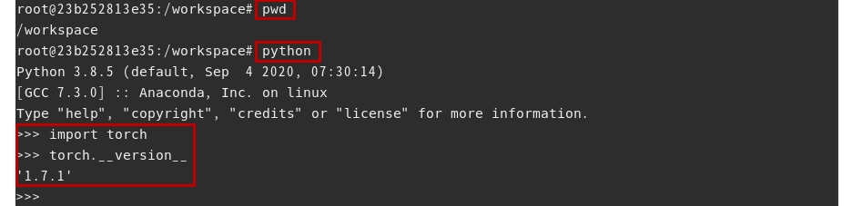
exit()를 입력하여 파이썬을 종료하고, shell에서 exit를 입력하여 컨테이너를 정지하자. 리눅스 터미널로 돌아올 것이다.
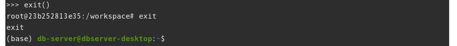
2.2 파이토치 컨테이너에서 CUDA 런타임 사용하기
도커 컨테이너에서 gpu, 즉 CUDA 런타임을 사용하기 위해서는 다음의 사전 작업이 필요하다.
- 엔비디아 그래픽 드라이버 설치
- 도커 설치
- 엔비디아 도커(런타임) 설치 : docker ce 19.03 이후 버전을 설치했다면, 별도로 설치할 필요없음
설치 방법과 CUDA 런타임을 사용하는 방법은 docker로 gpu기반 딥러닝 개발환경 구축하기 포스트에 설명했다. 따라서 여기서는 CUDA 런타임이 동작하는 컨테이너를 실행하는 명령에 대해서만 정리하겠다. 자세한 내용은 해당 포스트를 참고 하기 바란다.
- docker 19.03 이후 버전을 설치한 경우
$ docker run -it --gpus all pytorch/pytorch:1.7.1-cuda11.0-cudnn8-runtime
- 엔비디아 도커2를 설치한 경우 : 두가지 명령 사용가능
$ docker run --runtime=nvidia -it all pytorch/pytorch:1.7.1-cuda11.0-cudnn8-runtime
$ nvidia-docker run -it all pytorch/pytorch:1.7.1-cuda11.0-cudnn8-runtime
2.3 볼륨을 지정하여 컨테이너에서 파이토치 예제를 실행하기
먼저 실습에 사용할 파이토치 예제를 받아온다.
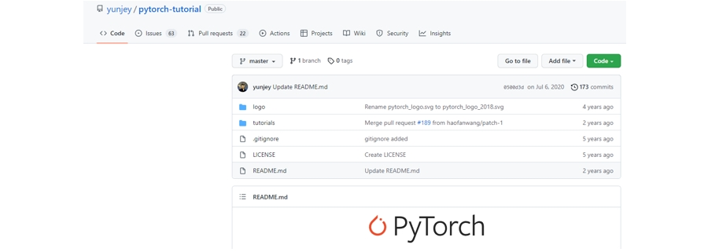
적당한 위치에 PythonProgramming이라는 폴더를 만들고, 해당 폴더로 들어가서 저장소의 파일을 복제해온다. 여기서는 https://github.com/yunjey/pytorch-tutorial에 있는 실습파일을 가져왔다.
$ mkdir PythonProgramming
$ cd PythonProgramming
~/PythonProgramming$ https://github.com/yunjey/pytorch-tutorial.git
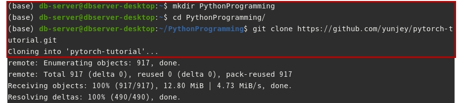
복제한 저장소 폴더 내부로 진입한다. 그리고 파일 리스트를 확인해본다.
~/PythonProgramming$ cd pytorch-tutorial
~/PythonProgramming/pytorch-tutorial$ ls
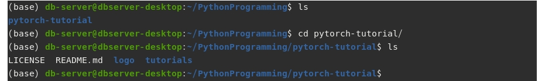
이제 CUDA 런타임이 동작하는 파이토치 컨테이너를 실행한다. 이때 외부의 /PythonProgramming 폴더와 내부의 /workspace 폴더 볼륨을 지정해준다.(앞에서 파이토치 컨테이너의 루트 디렉토리가 /workspace 였음을 기억하자.)
$ docker run --runtime=nvidia -it -v ~/PythonProgramming:/workspace pytorch/pytorch:1.7.1-cuda11.0-cudnn8-runtime
그리고 컨테이너의 쉘의 루트 디렉토리(/workspace) 파일 리스트를 확인해본다. 외부의 PythonProgramming 디렉토리 내부에 있는 pythorch-tutorial 폴더가 확인된다.
/workspace# ls
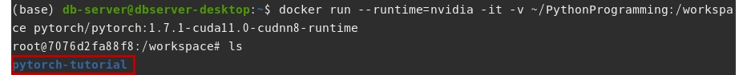
이제 저장소 폴더 내부로 진입해서 실습파일을 실행해보자.
우선 pytorch-tutorial/tutorials/01-basics/linear_regression 폴더로 진입한다. 해당 폴더 안에 main.py 파일도 확인한다.
/workspace# cd pytorch-tutorial
/workspace/pytorch-tutorial# cd tutorials
/workspace/pytorch-tutorial/tutorials# cd 01-basics
/workspace/pytorch-tutorial/tutorials/01-basics# cd linear_regression
/workspace/pytorch-tutorial/tutorials/01-basics/linear_regression# ls
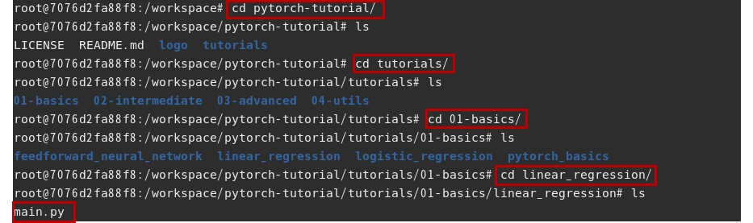
main.py 실습파일을 실행해보자.
/workspace/pytorch-tutorial/tutorials/01-basics/linear_regression# python main.py
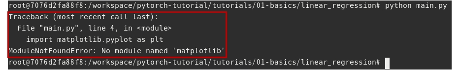
정상작으로 실행되지 않는다. 해당 컨테이너에는 python과 파이토치 라이브러리는 설치되어 있지만, main.py 실행에 필요한 matplotlib 라이브러리가 설치되어 있지 않기 때문이다.
라이브러리를 설치하고 다시 main.py를 실행해보자.
/workspace/pytorch-tutorial/tutorials/01-basics/linear_regression# pip install matplotlib
/workspace/pytorch-tutorial/tutorials/01-basics/linear_regression# python main.py
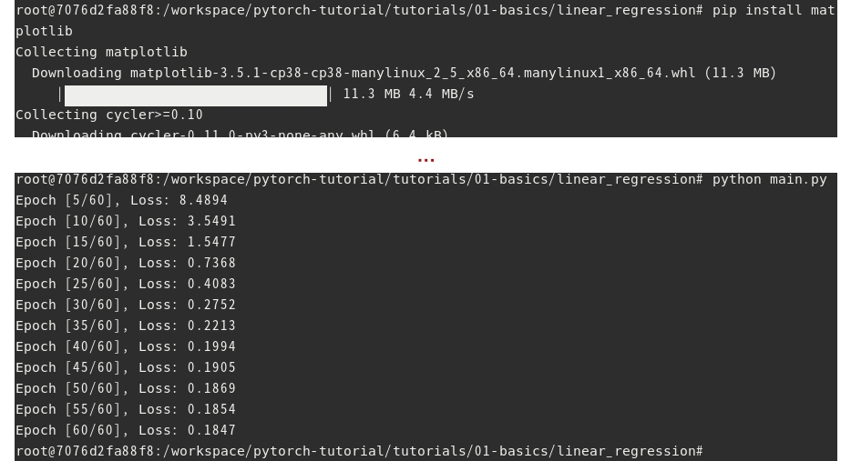
이번에는 main.py 내부에 구현된 모델 학습 기능이 실행되었다.
폴더 안에 학습 완료된 모델이 생성된 것을 확인한다.
/workspace/pytorch-tutorial/tutorials/01-basics/linear_regression# ls
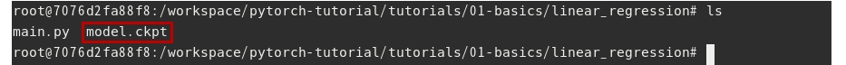
이제 컨테이너를 종료하고 외부 디렉토리에서도 학습 결과 파일이 확인되는지 살펴본다.
/workspace/pytorch-tutorial/tutorials/01-basics/linear_regression# exit
$ cd PythonProgramming
~/PythonProgramming$ cd pytorch-tutorial
~/PythonProgramming/pytorch-tutorial$ cd tutorials/01-basics
~/PythonProgramming/pytorch-tutorial/tutorials/01-basics$ cd linear_regression
~/PythonProgramming/pytorch-tutorial/tutorials/01-basics/linear_regression$ ls
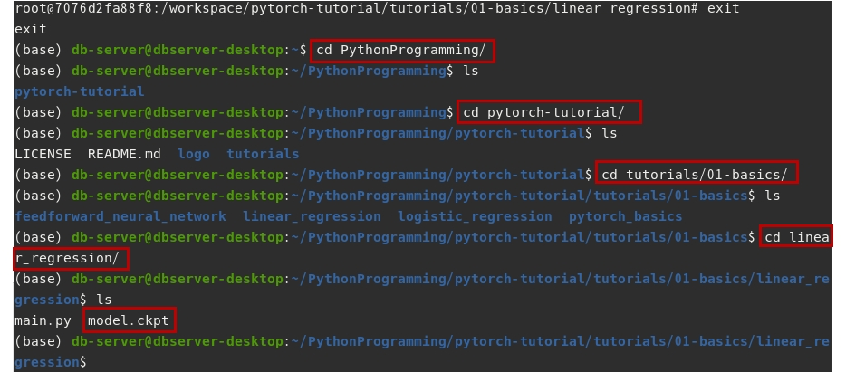
다음 포스트에서는 텐서플로(Tensorflow) 라이브러리가 탑재된 컨테이너를 실행하고 포트를 연계하는 실습을 진행한다.